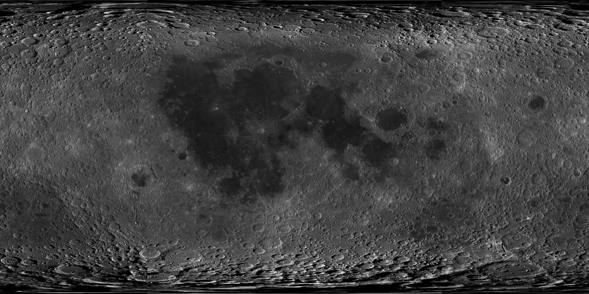

Intro
Impact craters are among the most prominent geological features on the lunar surface, preserving valuable information about the Moon's formation and evolution. Accurate identification of these craters is essential for lunar surface mapping, age estimation, terrain analysis, and supporting future robotic and human exploration missions.
This research focuses on the automated detection of small lunar craters using high-resolution Chandrayaan-2 OHRC imagery and the YOLOv9 deep learning framework. The proposed approach aims to detect craters ranging from 2 to 250 meters in diameter, enabling efficient crater mapping and contributing to advancements in planetary science and lunar exploration.
Conclusions
The results demonstrate that deep learning-based object detection can effectively identify small lunar craters from high-resolution OHRC imagery. By utilizing YOLOv9, the proposed framework provides a reliable and efficient approach for automated crater detection, supporting lunar surface analysis and future planetary exploration studies.